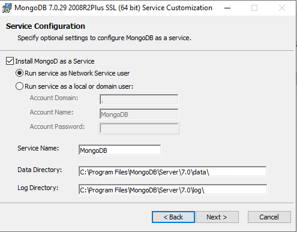
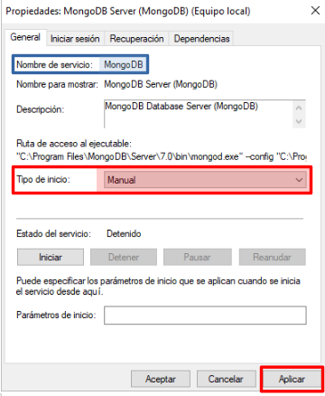
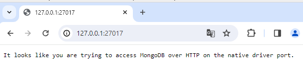
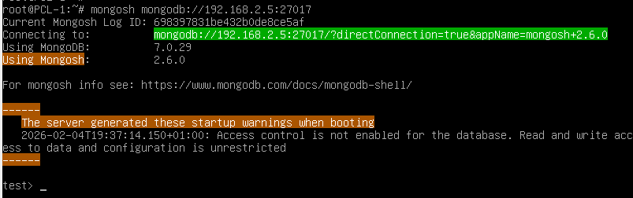
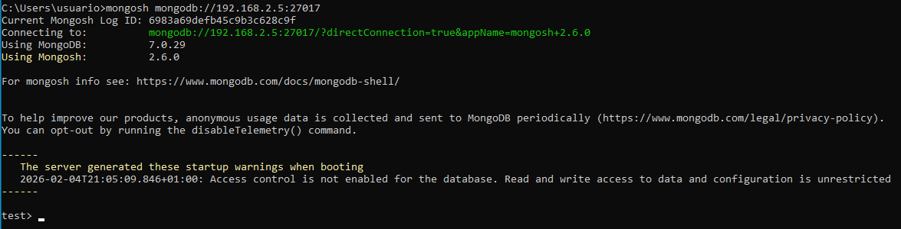
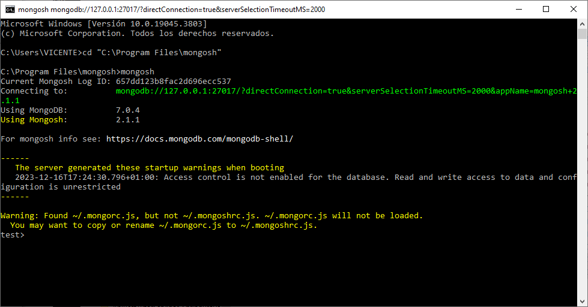

Hasta la fecha, la mayoría de los desarrolladores utilizaban sistemas de bases de datos SQL, pero de un tiempo a esta parte, un nuevo sistema de bases de datos parece haber llegado para quedarse, estos son los sistemas de bases de datos NoSQL (Not Only SQL – No sólo SQL).
Se puede decir que el término NoSQL aparece con la llegada de la Web 2.0. Hasta ese
momento, sólo las grandes empresas subían contenidos a Internet si disponían de un portal web. Pero la aparición de plataformas como Facebook, Twitter, etc, cualquier usuario podía subir contenidos a Internet, lo que provocó un gran incremento de datos.
Es en este momento cuando comienzan a aparecer los primeros problemas en los sistemas de bases de datos relacionales. La primera opción fue ampliar máquinas, pero esta solución no funcionaba y resultaba muy costoso. La segunda opción fue crear un sistema específico a tal problema, obteniendo así una solución robusta al problema, de ahí surgen los sistemas de bases de datos NoSQL.
El uso de los sistemas de bases NoSQL permite superar los problemas de escalabilidad y rendimiento que se producen en los sistemas de bases de datos relacionales cuando se dan cita una gran cantidad de usuarios concurrentes y millones de consultas diarias. Estos sistemas de bases de datos NoSQL están optimizados para las tareas de recuperación y agregación de información.
Además, las bases de datos NoSQL son sistemas de almacenamiento de información que no cumplen el esquema Entidad-Relación, ni la estructura de tabla en la que se almacenan los datos. Estos sistemas almacenan la información haciendo uso de formatos como Clave-Valor, mapeo de columnas o grafos.
La forma de almacenar de los sistemas de bases de datos NoSQL proporcionan una serie de ventajas sobre los sistemas de bases de datos relacionales.
Estas son algunas de las diferencias más destacables entre los sistemas de bases de datos NoSQL y los sistemas SQL.
Según la forma que utilice de almacenar la información nos encontraremos con diferentes tipos de sistemas de bases de datos NoSQL, las más habituales son las que se muestran a continuación.
Estas son las habituales en los sistemas de bases de datos NoSQL ya que son las más sencillas en cuanto a funcionalidad se refiere. En este sistema, cada elemento es identificado por una clave única, permitiendo así una recuperación rápida. Además, la información es almacenada como un objeto binario (BLOB). Son muy eficientes en cuanto a lectura y escritura. Algunos ejemplos de este tipo son Cassandra, BigTable o
Hbase.
En el modelo documental la información se almacena como si de un documento se tratase, para ello utiliza una estructura simple como JSON o XML, en el cual se utilizará una clave única para cada registro. Además de realizar búsquedas por clave-valor, se pueden hacer búsquedas más avanzadas por el contenido del documento.
Este tipo de modelo es el más versátil, se puede utilizar en gran variedad de proyectos, incluyendo muchos que funcionarían con el modelo relacional. Algunos ejemplos serían MongoDB y CouchDB.
{
Nombre:"Alberto",
Dirección:"Castaños 17",
Hijos:[
{Nombre:"Andrés", Edad:12},
{Nombre:"Susana", Edad:7},
{Nombre:"Verónica", Edad:4}
]
}
En este modelo la información se representa como nodos de un grafos y sus relaciones como las aristas entre los nodos, de forma que para recorrer la información se puede aplicar la teoría de grafos. Para conseguir un rendimiento máximo la información debe estar normalizada.
Este modelo permite una navegación más eficiente entre relaciones que el modelo relacional. Algunos ejemplos son Neo4j, InfoGrid y Virtuoso.
Este modelo representa la información mediante objetos, al igual que ocurre en la programación orientada a objetos (POO) con JAVA, C# o Visual Basic .Net. Algunos ejemplos de este modelo son Zope, Gemstone, Matisse y Db4o.
Más información de tipos de Bases de Datos noSQL
A continuación algunos ejemplos de sistemas de bases de datos NoSQL más utilizadas actualmente.
Base de datos creada por Apache de tipo Clave-Valor. Dispone de su propio lenguaje de consultas CQL (Cassandra Query Language). Es una aplicación JAVA y puede correr sobre cualquier plataforma que disponga de JVM.
Puedes visitar http://cassandra.apache.org/ para más información.
Esta base de datos creada por 10gen Inc íntegramente en C++ proporciona gran velocidad a la hora de ejecutar sus operaciones. Es de esquema libre orientada a documento, lo que permite que entrada sea diferente del resto de registros almacenados.
MongoDB utiliza un lenguaje propio para el almacenamiento de la información, BSON que es una evolución de JSON, con la particularidad de poder almacenar datos binarios. Actualmente, MongoDB es la base de datos preferida entre los desarrolladores.
Puedes visitar https://www.mongodb.com/es para más información.
Creada por Apache y desarrollada utilizando el lenguaje de programación Erlang4 es capaz de funcionar sobre la mayoría de sistemas operativos. Destacar que utiliza como lenguaje de interacción JavaScript y JSON para el almacenamiento de archivos.
Permite la creación de vistas, lo que permite combinar documentos para obtener valores, es decir, permite realizar operaciones JOIN típicas de los sistemas de bases de datos relacionales.
Puedes visitar http://couchdb.apache.org/ para más información.
Más ejemplos de BD noSQL se pueden encontrar en http://nosql-database.org/.
Algunas empresas que utilizan este tipo de bases de datos son las siguientes:
A continuación se dan unas directrices sobre cuándo elegir sistemas de bases de datos NoSQL:
Ranking de Bases de Datos más usadas
| Información | Tipo |
|---|---|
| https://db-engines.com/en/ranking | General |
| https://db-engines.com/en/ranking/relational+dbms | SQL Relacionales |
Ranking de Bases de Datos noSQL más usadas
| Información | Tipo |
|---|---|
| https://db-engines.com/en/ranking/document+store | BD Documentales |
| https://db-engines.com/en/ranking/key-value+store | BD Clave-Valor |
| https://db-engines.com/en/ranking/native+xml+dbms | BD XML |
| https://db-engines.com/en/ranking/object+oriented+dbms | BD Orientada Objetos |
| https://db-engines.com/en/ranking/graph+dbms | BD Grafos |
MongoDB es un sistema de gestión de bases de datos NoSQL de tipo document‑oriented, cuya unidad fundamental de almacenamiento es el documento. Estos documentos constituyen estructuras semiestructuradas basadas en pares clave–valor, lo que permite representar información de manera flexible y expresiva. Internamente, MongoDB utiliza BSON (Binary JSON), un formato binario que extiende las capacidades del JSON tradicional al incorporar nuevos tipos de datos, soporte nativo para información binaria y mecanismos optimizados de lectura y escritura. Gracias a ello, MongoDB combina la simplicidad conceptual del JSON con un rendimiento propio de sistemas altamente optimizados.
El modelo documental de MongoDB se caracteriza por varias propiedades esenciales. En primer lugar, destaca su flexibilidad estructural, ya que no requiere un esquema rígido previo; cada documento puede evolucionar de manera independiente sin afectar al resto de la colección. En segundo lugar, posee una naturaleza autodescriptiva, dado que cada documento contiene tanto su estructura como los tipos de datos asociados a cada campo. Asimismo, se trata de un modelo altamente expresivo, capaz de representar relaciones complejas mediante documentos anidados y arrays heterogéneos. A ello se suma su compatibilidad natural con JSON, que facilita la integración con aplicaciones modernas, especialmente aquellas desarrolladas para entornos web y arquitecturas distribuidas.
MongoDB es, además, una base de datos distribuida, general‑purpose y diseñada específicamente para responder a las necesidades de las aplicaciones contemporáneas y de la era de la nube. Su filosofía de diseño pretende maximizar la productividad del desarrollador, ofreciendo una experiencia de uso intuitiva y herramientas que permiten construir aplicaciones escalables sin complejidad innecesaria.
Como base de datos documental, MongoDB almacena los datos en forma de documentos de estilo JSON, lo que se alinea de manera natural con la lógica de las aplicaciones modernas y resulta conceptualmente más expresivo que el tradicional modelo relacional basado en filas y columnas. Esta representación facilita una comprensión más directa de la estructura de los datos y reduce la necesidad de transformaciones entre el modelo de aplicación y el modelo de persistencia.
El lenguaje de consulta de MongoDB es rico y expresivo: permite filtrar, ordenar y proyectar información en función de cualquier campo, sin importar el nivel de anidamiento dentro del documento. Además, el sistema soporta potentes mecanismos de agregación, que permiten llevar a cabo operaciones complejas como agrupaciones, transformaciones o cálculos derivados. MongoDB incorpora también capacidades avanzadas para casos de uso contemporáneos, como búsqueda de texto, consultas geoespaciales, análisis de grafos básicos y procesamiento de grandes volúmenes de datos. Una característica distintiva es que las propias consultas se expresan en formato JSON, lo que simplifica enormemente su construcción y evita recurrir a técnicas proclives a errores, como la concatenación de cadenas necesaria en SQL dinámico.
En conjunto, MongoDB ofrece un entorno moderno, flexible y especialmente adecuado para aplicaciones que requieren gran adaptabilidad, estructuración natural de la información y una experiencia de desarrollo fluida. Su modelo documental, basado en BSON, proporciona una base sólida para representar datos complejos de manera eficiente, al tiempo que dota al desarrollador de un lenguaje de consulta intuitivo y potente, coherente con la forma en que los datos se estructuran en la mayoría de aplicaciones actuales.
MongoDB integra una serie de características que definen su funcionamiento y su ecosistema de herramientas. En cuanto al sistema gestor de bases de datos (SGBD), se trata del propio MongoDB, una plataforma diseñada para ofrecer un almacenamiento flexible y orientado a documentos. Su modelo de datos es de tipo documental, lo que significa que la información se organiza en documentos con estructura similar a objetos JSON, permitiendo representar relaciones complejas y estructuras anidadas de manera natural.
Los tipos de datos utilizados se basan en documentos JSON —o, más precisamente, en BSON a nivel interno— lo que favorece la compatibilidad con lenguajes de programación modernos y facilita la manipulación de datos en aplicaciones distribuidas. Para interactuar con el servidor, MongoDB emplea un modelo cliente/servidor, de modo que múltiples clientes pueden conectarse de manera simultánea a través de la red. Dichas conexiones utilizan por defecto el puerto 27017, que actúa como canal principal de comunicación del servicio.
El ecosistema de MongoDB incluye diversas herramientas de acceso según las necesidades del usuario. La interfaz más directa es mongosh, el cliente de línea de comandos que permite ejecutar consultas y administrar la base de datos con precisión. Para quienes prefieren una experiencia visual, MongoDB ofrece MongoDB Compass, una aplicación gráfica de escritorio que facilita la exploración y análisis de colecciones. Como alternativa basada en navegador web, existe MongoAdmin, una interfaz gráfica que proporciona una forma ligera y accesible de gestionar la base de datos sin necesidad de instalar software adicional.
Estas características en conjunto proporcionan un entorno de trabajo versátil y adaptable, pensado tanto para desarrolladores que necesitan control detallado mediante línea de comandos como para quienes requieren herramientas visuales orientadas a la productividad.
La instalación de MongoDB es bastante sencilla, ya que los manuales facilitados en su propia web hacen que esta tarea no sea complicada.
Desde la sección de descargas nos bajaremos la versión estable actual para Community Server en la versión de nuestro sistema operativo. En la instalación seleccionaremos la opción de Completa y luego lo configuraremos como servicio. La siguiente imagen muestra la pantalla donde seleccionaremos esta opción para que MongoDB se instale como servicio de Windows.

Después, dejaremos marcado MongoDB Compass para que se instale también junto con MongoDB Shell.
Para más información sobre la instalación, puedes consultar los siguientes enlaces según tu sistema operativo:
Referencias de instalación
Una vez finalizada la instalación, comprobaremos que el servicio se ha instalado correctamente desde el Administrador de Servicios de Windows (services.msc):
Podemos comprobar que el servicio está instalado correctamente, que por defecto se está ejecutando y que su tipo de inicio es Automático. También podemos ver su descripción y que el ejecutable se llama mongod.exe.
Es aconsejable dejar el servicio en Manual para que no se inicie automáticamente cada vez que iniciemos Windows. Una vez cambiado el tipo de inicio a Manual, deberemos clicar en el botón Aplicar para guardar los cambios.

El servicio podemos iniciarlo o detenerlo cuando lo necesitemos desde el Administrador de Servicios o desde la consola CMD como administrador con el comando net.
Desde la línea de comandos usaremos el comando net start para iniciar el servicio:
C:\Windows\system32>net start MongoDB
El servicio de MongoDB Server (MongoDB) está iniciándose.
El servicio de MongoDB Server (MongoDB) se ha iniciado correctamente.
Para detenerlo utilizaremos el comando net stop:
C:\Windows\system32>net stop MongoDB
El servicio de MongoDB Server (MongoDB) está deteniéndose.
El servicio de MongoDB Server (MongoDB) se detuvo correctamente.
El puerto de escucha por defecto es el 27017, y podemos comprobar que el servidor está escuchando desde un terminal CMD con el comando netstat.
Para sistemas Windows utilizaremos:
netstat -a -p TCP
Para sistemas Linux utilizaremos:
netstat -at
Podemos comprobar el funcionamiento del servidor MongoDB abriendo un navegador y accediendo a la URL http://localhost:27017. Si todo funciona correctamente, veremos un mensaje similar al siguiente:

Usuarios de Windows 10
MongoDB declara que Windows 10 es un sistema operativo soportado para las ediciones Community y Enterprise. Pero lo importante es que en MongoDB 8.0 se introdujo una actualización profunda de TCMalloc (el gestor de memoria), y según la documentación oficial:
Windows uses the legacy TCMalloc version and does not support the upgraded TCMalloc introduced in MongoDB 8.0.
Muchos usuarios han informado de fallos relacionados con esto, específicamente crashes en tcmalloc con excepción 0xC000001D. Por lo tanto, hay que instalar una versión de MongoDB anterior a la 8.0 para evitar estos problemas.
¿ Cómo acceder desde otro equipo ?
Por defecto, MongoDB solo escucha en la dirección local 127.0.0.1, como se puede comprobar mediante el comando netstat. Si necesitas acceder al servidor desde otro equipo, deberás habilitar las conexiones remotas.
En Linux, el archivo de configuración se encuentra en: /etc/mongod.conf
En Windows, se ubica en: C:\Program Files\MongoDB\Server\X.X\bin\mongod.cfg donde X.X es la versión instalada.
Dentro de este archivo debes localizar la línea bindIp: 127.0.0.1 y sustituirla por bindIp: 0.0.0.0. Este cambio indica al servicio que acepte conexiones desde cualquier dirección IP.
Documentación
Una vez instalado MongoDB, podemos interactuar con el servidor de varias formas. La más directa es mediante la consola de comandos mongosh, que se instala automáticamente junto con el servidor MongoDB. También existen herramientas gráficas como MongoDB Compass o MongoAdmin que facilitan la gestión visual de las bases de datos. En nuestro caso hemos instalado MongoDB Compass junto con el servidor, por lo que podemos utilizarlo para conectarnos al servidor y gestionar las bases de datos de forma visual.
En las instalaciones como localhost se deshabilita la autenticación por defecto, por lo que no es necesario crear usuarios para conectarse al servidor. En instalaciones en producción, es recomendable habilitar la autenticación y crear usuarios con los permisos adecuados para cada tarea.
MongoDB Compass es una herramienta gráfica de escritorio que permite a los usuarios interactuar con sus bases de datos MongoDB de manera visual e intuitiva. Proporciona una interfaz amigable para explorar, consultar y administrar las colecciones y documentos almacenados en MongoDB, sin necesidad de escribir comandos en la línea de comandos.
Con MongoDB Compass, los usuarios pueden conectarse a sus despliegues de MongoDB, ya sea localmente o en la nube, y realizar operaciones como crear bases de datos, colecciones y documentos, ejecutar consultas con filtros avanzados, visualizar índices y analizar el rendimiento de las consultas. Además, ofrece funcionalidades para importar y exportar datos, así como para gestionar usuarios y permisos.
Utilizar por primera vez MongoDB Compass es sencillo. Al abrir la aplicación, se presenta una pantalla de conexión donde se pueden ingresar los detalles del servidor MongoDB al que se desea conectar, como la dirección IP, el puerto, las credenciales de autenticación y otras opciones de configuración. Una vez establecida la conexión, se accede a una interfaz gráfica que muestra las bases de datos disponibles, permitiendo navegar por ellas y realizar diversas operaciones de gestión y consulta de manera visual.
El siguiente video muestra los pasos iniciales para conectarse a un servidor MongoDB local utilizando MongoDB Compass.
Como se muestra en el video, podemos abrir un terminal de Mongo Shell desde MongoDB Compass.
MongoDB Shell, conocido como mongosh, es un entorno interactivo REPL basado en JavaScript y Node.js que permite conectarse y trabajar directamente con despliegues de MongoDB, ya sea a nivel local, remoto o en la nube mediante Atlas. Permite ejecutar consultas, administrar bases de datos, manipular datos mediante operaciones CRUD y automatizar tareas mediante scripts. Su diseño moderno mejora significativamente la experiencia del desarrollador gracias a funcionalidades como autocompletado, resaltado de sintaxis y mensajes de error más detallados.
No es necesario instalar mongosh en el mismo equipo donde se encuentra el servidor MongoDB, ya que puede instalarse de forma independiente en cualquier máquina que necesite conectarse al servidor. Esto facilita la administración remota y el desarrollo distribuido. Si instalamos mongosh en un equipo diferente, debemos asegurarnos de que el servidor MongoDB esté configurado para aceptar conexiones remotas, ajustando la directiva bindIp con el valor 0.0.0.0 en el archivo de configuración mongod.cfg. Si tenemos algún cortafuegos o firewall, también debemos asegurarnos de que el puerto 27017 esté abierto para permitir la comunicación entre mongosh y el servidor MongoDB.
Para descargar e instalar mongosh de forma independiente, podemos visitar la página oficial de descargas en https://www.mongodb.com/try/download/shell y seguir las instrucciones específicas para nuestro sistema operativo.
Instalar mongosh en Linux
En este ejemplo, descargaremos e instalaremos mongosh en un equipo con Debian 11 Linux y nos conectaremos a un servidor MongoDB de nuestra red local (192.168.2.5) que corre en una máquina con Windows 10. Vamos a suponer que el sevidor MongoDB está configurado para aceptar conexiones de otros equipos de la red local y que previamente se ha creado una regla en el cortafuegos de Windows para permitir las conexiones entrantes al puerto 27017.
Con estos supuestos, los pasos para descargar, instalar y conectarnos al servidor remoto son los siguientes:
Accedemos a la página web de descargas de mongosh (https://www.mongodb.com/try/download/shell) y vemos cual es la url para descargar el paquete DEB para Linux x64.
Descargamos el paquete y lo instalamos con el gestor de paquetes proporcionado por la distribución.
Para el caso de equipos sin entorno gráfico, podemos realizar la descarga e instalación desde la línea de comandos:
wget https://downloads.mongodb.com/compass/mongodb-mongosh_2.6.0_amd64.deb
dpkg -i mongodb-mongosh_2.6.0_amd64.deb
Una vez instalado, podemos conectarnos al servidor remoto desde una terminal el siguiente comando:
mongosh mongodb://192.168.2.5:27017
Si nos aparece algo similar a la siguiente imagen, significa que la conexión se ha realizado correctamente.

Instalar mongosh en Windows
En este supuesto, instalaremos mongosh en un equipo con Windows 10 y nos conectaremos al servidor MongoDB del ejemplo anterior (192.168.2.5).
El proceso es muy sencillo, solo tenemos que descargarnos el instalador MSI desde la página oficial de descargas (https://www.mongodb.com/try/download/shell) e instalarlo.
A continuación, abrimos una terminal CMD y nos conectamos al servidor remoto con el siguiente comando:
mongosh mongodb://192.168.2.5:27017
Si todo ha ido bien, nos aparecerá una pantalla similar a la del ejemplo anterior, indicando que la conexión se ha realizado correctamente.

Antes de profundizar en la estructura de los documentos y los tipos de datos, es importante entender cómo organiza MongoDB la información.
En MongoDB, una base de datos (database) es un contenedor lógico que agrupa varias colecciones. Cada base de datos mantiene su propio espacio de nombres y su propio conjunto de archivos de almacenamiento. Un solo servidor MongoDB puede gestionar múltiples bases de datos simultáneamente.
Dentro de una base de datos encontramos las colecciones (collections), que son agrupaciones de documentos. A diferencia de las tablas en los sistemas relacionales, las colecciones no requieren un esquema fijo: los documentos almacenados pueden tener campos distintos y estructuras variadas. Esto proporciona una gran flexibilidad en el diseño de la información, especialmente útil en aplicaciones que evolucionan con rapidez.
Base de datos y colecciones
Imaginemos una base de datos llamada empresa.
Dentro de ella podría haber varias colecciones:
empleadosdepartamentosproyectosCada colección contiene documentos independientes, sin necesidad de un esquema preestablecido.
En MongoDB, la unidad fundamental de almacenamiento es el documento, un conjunto de pares clave–valor que se asemeja conceptualmente a un objeto JSON. Sin embargo, la representación interna se realiza mediante BSON (Binary JSON), un formato binario optimizado que permite manejar datos de forma más eficiente y soportar tipos adicionales.
Un documento MongoDB tiene las siguientes características principales:
_id, de tipo ObjectId por defecto.Documento MongoDB
A continuación se muestra un ejemplo de documento MongoDB que representa la información de una persona:
{
"_id": ObjectId("65a2c3109d1cce001fa9d8b2"),
"nombre": "María",
"edad": 29,
"direccion": {
"calle": "Gran Vía",
"numero": 10,
"ciudad": "Madrid"
},
"aficiones": ["cine", "lectura", "senderismo"],
"activo": true
}
Fijémonos que el documento contiene varios tipos de datos, que estudiaremos a continuación.
Además, las claves van entre comillas dobles, siguiendo la sintaxis JSON.
BSON extiende JSON añadiendo una tipología más rica y una codificación binaria eficiente. A continuación se presenta un compendio sistemático de los tipos de datos más relevantes, su semántica, casos de uso y observaciones relacionadas con su representación.
String (UTF‑8)
Representa texto en codificación UTF‑8. Es el tipo más habitual para campos descriptivos, nombres de usuario o contenido textual.
String
El siguiente ejemplo muestra un documento con un campo de tipo String.
{ "nombre": "Lucía" }
Number
BSON distingue entre cuatro tipos numéricos optimizados para distintos rangos y precisiones:
Tipos numéricos
El siguiente ejemplo muestra un documento con varios campos numéricos.
{
"edad": 30,
"poblacion": NumberLong(9000000000),
"temperatura": 22.5,
"saldo": NumberDecimal("1200.75")
}
El campo edad es un entero de 32 bits, poblacion es un entero de 64 bits,
temperatura es un número de coma flotante y saldo es un decimal de alta precisión.
Boolean
Valores lógicos true y false.
Boolean
El siguiente ejemplo muestra un documento con un campo booleano.
{ "activo": true }
El valor Null
Representa un valor intencionalmente vacío y se utiliza para indicar la ausencia de un valor. Es aplicable a cualquier tipo de dato.
Valor nulo
El siguiente ejemplo muestra un documento con un campo que tiene un valor nulo.
{ "telefono": null }
Document (Documento anidado)
Estructura jerárquica compuesta por pares clave–valor. Permite modelar subentidades (relaciones 1:1 y 1:N dentro del propio documento), evitando la necesidad de joins.
Documento anidado
El siguiente ejemplo muestra un documento con un subdocumento direccion y otro empresa.
{
"nombre": "Sergio",
"direccion": {
"calle": "Alameda",
"numero": 22,
"ciudad": "Valencia",
"cp": "46001"
},
"empresa": {
"nombre": "TechNova",
"cif": "B12345678"
}
}
Array
Colección ordenada cuyos elementos pueden ser homogéneos (todos del mismo tipo) o heterogéneos (mezcla de diferentes tipos de datos). Muy útil para listas de etiquetas, historiales y colecciones embebidas.
Se utilizan los corchetes [] para definir arrays y los elementos se separan por comas. El acceso a los elementos se realiza mediante índices basados en cero.
Array
Este ejemplo muestra un array heterogéneo con strings y subdocumentos.
{
"usuario": "ana.gonzalez",
"aficiones": ["fotografia", "yoga", {"tipo": "lectura", "frecuencia": "semanal"}]
}
ObjectId
Identificador único de 12 bytes que se asigna por defecto al campo _id. Es compacto, eficiente para índices y tiene orden temporal aproximado (útil para ordenar por creación).
ObjectId
Documento con _id autogenerado y un campo adicional.
{
"_id": ObjectId("507f1f77bcf86cd799439011"),
"titulo": "Introducción a MongoDB"
}
Date
Representa fecha y hora en milisegundos desde la época UNIX (1 de enero de 1970). Se utiliza para almacenar marcas de tiempo en aplicaciones. Las fechas se almacenan en UTC y se recomienda siempre trabajar con esta zona horaria para evitar confusiones.
Date
Documento con una marca de tiempo de creación.
{
"titulo": "Entrada de blog",
"creado_en": ISODate("2024-11-05T14:30:00Z")
}
Timestamp
Marca de tiempo con semántica interna utilizada por el sistema para replicación y operaciones internas. Para campos de negocio suele preferirse Date.
Timestamp
Documento con un Timestamp (normalmente no requerido a nivel de aplicación).
{
"evento": "sincronizacion",
"ts": Timestamp(1706600000, 1)
}
Además de los tipos mencionados, BSON incluye otros tipos especializados como Binary Data, Regular Expression, Code y los valores centinela MinKey y MaxKey.
En las bases de datos noSQL, la estructura de los datos es diferente a las bases de datos relacionales como MySQL. A continuación se muestra una tabla comparativa entre MySQL y MongoDB com el fin de entender mejor sus equivalencias.
| MySQL | MongoDB |
|---|---|
| DataBase / Base de Datos | DataBase / Base de Datos |
| Table / Tabla | Collection / Colección |
| Record / Registro | Document / Documento |
| Row / Fila | Document / Documento |
| Column / Columna | Field / Campo |
| Field / Campo | Field / Campo |
| Attribute / Atributo | Field / Campo |
| Primary Key / Clave primaria | _id |
| Relationship / Relación | Embedded documents / Documentos embebidos |
| Joins / Uniones | Linking / Enlaces |
Trabajar con MongoDB implica interactuar con el sistema a través de mongosh, la consola oficial del SGBD. Aunque MongoDB es una base de datos orientada a documentos, sus comandos mantienen cierta similitud conceptual con los del SQL tradicional: seleccionar bases de datos, consultar información, insertar documentos… pero con una sintaxis y filosofía propia del modelo NoSQL.
A continuación se presentan los comandos más habituales, acompañados de explicaciones y ejemplos que ilustran su función dentro del flujo de desarrollo.
Seleccionar una base de datos
En MongoDB, el comando use permite cambiar el contexto a una base de datos concreta. Si la base no existe, se creará automáticamente cuando añadas la primera colección. Su sintaxis es la siguiente:
use <nombreBD>
Seleccionar base de datos
Para seleccionar la base de datos llamada empresa, se ejecutaría:
use empresa
Consultar la base de datos activa
El comando db muestra la base de datos actualmente seleccionada en el contexto de la sesión. Su sintaxis es simple:
db
Mostrar las bases de datos disponibles
El comando show dbs lista todas las bases de datos presentes en el servidor MongoDB. Solo aquellas que contienen datos serán mostradas. Su sintaxis es la siguiente:
show dbs
Las colecciones equivalen a las tablas del modelo relacional y agrupan documentos.
Mostrar las colecciones de la base de datos actual
El comando show collections lista todas las colecciones dentro de la base de datos actualmente seleccionada. Su sintaxis es la siguiente:
show collections
Crear colecciones
Aunque MongoDB crea automáticamente una colección al insertar el primer documento, también es posible crear una colección explícitamente utilizando el comando createCollection. Su sintaxis es la siguiente:
db.createCollection("<nombreColeccion>")
Crear colección
Para crear una colección llamada empleados, se ejecutaría:
db.createCollection("empleados")
Eliminar una colección
El comando drop elimina una colección completa junto con todos sus documentos. Su sintaxis es la siguiente:
db.<nombreColeccion>.drop()
Eliminar colección
Para eliminar la colección llamada empleados, se ejecutaría:
db.empleados.drop()
Los documentos son la unidad fundamental de almacenamiento en MongoDB. A continuación se presentan los comandos principales para manipular documentos dentro de las colecciones.
Insertar documentos
El comando insertOne permite añadir un único documento a una colección, mientras que insertMany se utiliza para insertar múltiples documentos en una sola operación. Su sintaxis es la siguiente:
db.<nombreColeccion>.insertOne({<documento>})
db.<nombreColeccion>.insertMany([{<documento1>}, {<documento2>}, ...])
Insertar un documento
Para insertar un documento en la colección empleados, se ejecutaría:
db.empleados.insertOne({
"nombre": "Carlos",
"edad": 28,
"departamento": "Ventas"
})
Insertar múltiples documentos
Para insertar varios documentos en la colección empleados, se ejecutaría:
db.empleados.insertMany([
{
"nombre": "Ana",
"edad": 32,
"departamento": "Marketing"
},
{
"nombre": "Luis",
"edad": 45,
"departamento": "Finanzas"
}
])
Consultar documentos
Los comados de consulta permiten recuperar documentos almacenados en una colección. Se pueden aplicar filtros para obtener resultados específicos.
Los filtros se especifican mediante objetos JSON que definen las condiciones que deben cumplir los documentos.
Los operadores lógicos y de comparación permiten construir consultas complejas.
La siguiente tabla resume algunos de los operadores más comunes:
| Operador | Descripción | Ejemplo |
|---|---|---|
| $eq | Igual a | { "edad": { $eq: 30 } } |
| $ne | Distinto de | { "edad": { $ne: 30 } } |
| $gt | Mayor que | { "edad": { $gt: 30 } } |
| $lt | Menor que | { "edad": { $lt: 30 } } |
| $gte | Mayor o igual que | { "edad": { $gte: 30 } } |
| $lte | Menor o igual que | { "edad": { $lte: 30 } } |
| $in | En un conjunto | { "departamento": { $in: ["Ventas", "Marketing"] } } |
| $nin | No en un conjunto | { "departamento": { $nin: ["Ventas", "Marketing"] } } |
Además, MongoDB soporta operadores lógicos como $and, $or y $not para combinar múltiples condiciones en una sola consulta.
También es posible utilizar expresiones regulares para realizar búsquedas de patrones en campos de tipo string.
A continuación se describen los comandos principales para consultar documentos.
El comando find recupera documentos de una colección. Puede aceptar criterios de búsqueda para filtrar los resultados. Su sintaxis es la siguiente:
db.<nombreColeccion>.find({<criterio>})
Consultar documentos
Para obtener todos los documentos de la colección empleados, se ejecutaría:
db.empleados.find()
Para filtrar empleados del departamento de Ventas, se ejecutaría:
db.empleados.find({ "departamento": "Ventas" })
El comando findOne recupera un único documento que coincida con el criterio especificado. Este comando devuelve el primer documento que coincide con el criterio proporcionado. Su sintaxis es la siguiente:
db.<nombreColeccion>.findOne({<criterio>})
Consultar un documento
Para obtener un solo documento de la colección empleados, se ejecutaría:
db.empleados.findOne({ "nombre": "Ana" })
Además, es posible utilizar el método .pretty() para formatear la salida de los documentos de manera más legible.
db.<nombreColeccion>.find().pretty()
Actualizar documentos
El comando updateOne modifica un único documento que coincida con el criterio especificado, mientras que updateMany actualiza todos los documentos que cumplan con el criterio. Su sintaxis es la siguiente:
db.<nombreColeccion>.updateOne({<criterio>}, { $set: {<campos>}})
db.<nombreColeccion>.updateMany({<criterio>}, { $set: {<campos>}})
Actualizar un documento
Para actualizar la edad de un empleado llamado Carlos a 29 años, se ejecutaría:
db.empleados.updateOne(
{ "nombre": "Carlos" },
{ $set: { "edad": 29 } }
)
Actualizar múltiples documentos
Para actualizar el departamento de todos los empleados mayores de 40 años a Senior, se ejecutaría:
db.empleados.updateMany(
{ "edad": { $gt: 40 } },
{ $set: { "departamento": "Senior" } }
)
En ambos comandos, el operador de actualización $set se utiliza para especificar los campos que se desean actualizar. Además de este operador se puede utilizar el operador $pull para eliminar un elemento de una lista (o array) y el operador $push para añadir un elemento al final de la lista.
Actualizar lista
El siguiente ejemplo actuliza la lista de provincias de la Comunidad Valenciana eliminando la provincia Murcia.
db.comunidades.updateOne(
{"comunidad":'Comunidad Valenciana'},
{ $pull: {"provincias": "Murcia"} }
)
Actualizar lista
El siguiente ejemplo actuliza la lista de idiomas del empleado Carlos añadiendo el Polaco.
db.empleados.updateOne(
{ "nombre": "Carlos" },
{ $push: { "idiomas": "Polaco" } }
)
El comando replaceOne reemplaza un documento completo que coincida con el criterio especificado. Su sintaxis es la siguiente:
db.<nombreColeccion>.replaceOne({<criterio>}, {<nuevoDocumento>})
Reemplaza el documento que coincide con el criterio proporcionado por un nuevo documento completo.
Reemplazar un documento
Para reemplazar el documento de un empleado llamado Ana con un nuevo documento, se ejecutaría:
db.empleados.replaceOne(
{ "nombre": "Ana" },
{
"nombre": "Ana García",
"edad": 33,
"departamento": "Marketing"
}
)
Eliminar documentos
El comando deleteOne elimina un único documento que coincida con el criterio especificado, mientras que deleteMany elimina todos los documentos que cumplan con el criterio. Su sintaxis es la siguiente:
db.<nombreColeccion>.deleteOne({<criterio>})
db.<nombreColeccion>.deleteMany({<criterio>})
Eliminar un documento
Para eliminar un empleado llamado Luis, se ejecutaría:
db.empleados.deleteOne({ "nombre": "Luis" })
Eliminar múltiples documentos
Para eliminar todos los empleados del departamento de Ventas, se ejecutaría:
db.empleados.deleteMany({ "departamento": "Ventas" })
MongoDB ofrece una serie de comandos avanzados para operaciones más complejas, como agregaciones, índices y gestión de usuarios. En esta sección nos centraremos en las consultas de agregación, una herramienta poderosa para el análisis y procesamiento de datos.
Las consultas de agregación en MongoDB permiten realizar operaciones avanzadas sobre los datos: agrupar, filtrar, ordenar, transformar y obtener estadísticas. Son una herramienta fundamental para el análisis y procesamiento de la información en bases de datos NoSQL.
Para realizar consultas de agregación, se utiliza el método aggregate(), que acepta un array de etapas que definen el flujo de procesamiento de los documentos.
La agregación es un mecanismo que permite procesar documentos de una colección aplicando una serie de transformaciones en cadena para producir un resultado final.
Funciona de forma similar a las cláusulas de agregación en SQL, como:
GROUP BYORDER BYCOUNT, SUM, AVG, …)HAVINGen SQL, pero mediante un sistema de etapas encadenadas conocidas como pipeline.
Un pipeline es una secuencia de etapas en la que la salida de una etapa se convierte en la entrada de la siguiente. Puede imaginarse como una tubería de procesamiento, donde cada etapa transforma los datos de alguna manera hasta llegar al resultado final. La sintaxis básica del comando aggregate() es la siguiente:
db.coleccion.aggregate([
{ <etapa1> },
{ <etapa2> },
{ <etapa3> }
])
El Aggregation Pipeline de MongoDB está compuesto por una serie de etapas que se aplican de manera secuencial a los documentos de una colección.
Cada etapa recibe los documentos producidos por la etapa anterior, lo que permite construir flujos de transformación potentes y flexibles.
A continuación se describen las etapas más utilizadas del pipeline.
Filtrar documentos ($match)
La etapa $match permite filtrar documentos según un criterio determinado, actuando como el equivalente al WHERE en SQL.
Generalmente se coloca al principio del pipeline para reducir la cantidad de documentos que avanzan al resto de etapas, optimizando el rendimiento.
Filtrar documentos
Para filtrar empleados del departamento de IT, se ejecutaría:
{ $match: { departamento: "IT" } }
Esta etapa selecciona solo los documentos donde el campo departamento es igual a "IT".
Seleccionar y transformar campos ($project)
La etapa $project permite elegir qué campos incluir o excluir, así como crear nuevos campos derivados, renombrar o transformar valores.
Actúa de manera similar al SELECT en SQL cuando se especifican columnas concretas.
Seleccionar campos
Para incluir solo los campos nombre y edad en los resultados, se ejecutaría:
{
$project: {
nombre: 1,
edad: 1,
_id: 0
}
}
El campo con valor 1 indica inclusión, mientras que 0 indica exclusión.
Agrupar documentos ($group)
La etapa $group permite agrupar documentos que comparten un mismo valor y aplicar operaciones de agregación como:
$sum: suma valores$avg: calcula la media$max / $min: obtiene el máximo y mínimo$count: cuenta documentosEs el equivalente al GROUP BY de SQL.
La etapa $group crea un nuevo documento para cada grupo, utilizando el campo _id para definir la clave de agrupación.
Agrupar documentos
Para agrupar empleados por departamento y contar cuántos hay en cada uno, se ejecutaría:
db.empleados.aggregate([
{ $group: { _id: "$departamento", total: { $sum: 1 } } }
])
La etapa $group agrupa los documentos por el campo departamento y cuenta el número de empleados en cada grupo. Designamos total como un nuevo campo que contiene el conteo. El operador $sum suma 1 por cada documento en el grupo.
Ordenar resultados ($sort)
La etapa $sort se utiliza para ordenar documentos del pipeline según uno o varios campos. Con 1 se indica orden ascendente y con -1 orden descendente.
Ordenar resultados
Para ordenar los documentos por edad en orden ascendente, se ejecutaría:
{ $sort: { edad: 1 } }
Esta etapa ordena los documentos por el campo edad en orden ascendente. Para ordenar en orden descendente, se utilizaría -1 al lado del campo edad.
Limitar y paginar resultados ($limit y $skip)
Estas dos etapas permiten controlar cuántos documentos devuelve el pipeline.
Con $limit se restringe el número de documentos a mostrar, mientras que con $skipse omite un número específico de documentos desde el inicio del conjunto de resultados.
Limitar y paginar resultados
{ $limit: 10 }
{ $skip: 5 }
Esta etapa limita la salida a 10 documentos y omite los primeros 5.
A continuación se muestra un ejemplo completo de un pipeline que utiliza varias de estas etapas:
Pipeline completo
El siguiente ejemplo filtra, agrupa y ordena documentos:
db.empleados.aggregate([
{ $match: { edad: { $gte: 30 } } },
{ $group: { _id: "$departamento", total: { $sum: 1 } } },
{ $sort: { total: -1 } }
])
En este ejemplo, el pipeline realiza las siguientes operaciones:
HASTA AQUÍ ESTÁ BIEN
Documentación de The mongo Shell
Tutorial de MongoDB
Para instalar mongosh, (no es necesario tener instalado el servidor) lo descargaremos y lo descomprimiremos en cualquier carpeta, por ejemplo:
C:\Program Files\mongosh
Si ya tenemos funcionando nuestra base de datos MongoDB (es importante haber iniciado previamente el servicio), para utilizar la consola abriremos un terminal CMD y ejecutaremos el comando mongosh. Por ejemplo: C:\Program Files\mongosh
C:\> cd "C:\Program Files\mongosh"
C:\> mongosh
Nosotros usaremos mongosh.exe.

Veamos algunos comandos básicos para familiarizarnos con la consola y con este tipo de base de datos.
Listar las bases de datos
show dbs
Crear una base de datos
En MongoDB no se crean las bases de datos, no existe un método como createDataBase, se crearán las bases de datos a medida que vayamos insertando la información.
No hay que preocuparse de crear una base de datos, simplemente crearemos la colección y los documentos, para eso utilizaremos las operaciones CRUD básicas más adelante.
Mostrar la base de datos actual
db
Seleccionar una base de datos
use nombreBD
A continuación se verán las operaciones CRUD principales.
Documentación MongoDB CRUD Operations (Create Read Update Delete)
Crear una base de datos
Como ya se ha comentado, en MongoDB no se crean las bases de datos como tal, para ello, lo que haremos será utilizar el comando use y el nombre de la base de datos, aunque esta no exista.
use nombreBD
Insertar/guardar información en la base de datos
Con el siguiente comando, siendo la primera vez que se ejecuta, además de insertar el registro se crea la colección.
db.nombreColeccion.insertOne({..})
La siguiente imagen muestra una inserción múltiple, en este caso, al existir ya la colección esta no vuelve a crearse.
db.nombreColeccion.insertMany([{..},{..},{..}])
Mostrar las colecciones de la BD seleccionada
Para ver las colecciones disponibles deberemos ejecutar el siguiente comando.
show collections
Leer/mostrar una colección
Un listado completo de la colección.
db.nombreColeccion.find()
Eliminar una base de datos
Teniendo la base de datos seleccionada (con el comando use) ejecutaremos el siguiente comando.
db.dropDatabase()
Ayuda
Para entrar en la consola, disponemos de varios parámetros de configuración. Para mostrar la ayuda:
C:\> mongosh --help
En la consola de mongo podemos mostrar la ayuda de comandos para una base de datos y para una colección:
use nombreBD
db.help()
db.nombreColeccion.help()
Salir y detener el servidor
Para salir, desde el terminal de mongosh ejecutaremos exit.
exit
Por último, para detener el servidor correctamente, desde el terminal de mongosh ejecutaremos los tres siguientes comandos.
use admin
db.shutdownServer()
exit
Ejecución de varias instrucciones desde script
Podemos escribir varias instrucciones en un archivo miscript.js y cargarlo con el comando load:
use mibasededatos
load("C:\\micarpeta\\miscript.js")
exit
Para que un archivo mongo javascript pueda cargarse con load no debe tener comandos use ni find, pero puede contener bucles while o for.
Veamos algunos ejemplos comparando con SQL:
(tabla)
Para probar también usar consolas online:
Consola MongoDB en línea de pruebas
Consultas sobre una colección
Obtener un listado especificando un criterio. Por ejemplo para un campo:
db.nombreColeccion.find({campo:valor})
Obtener un listado utilizando expresiones regulares ($regex). Por ejemplo para un campo:
db.nombreColeccion.find({campo:expresionRegular})
Expresiones regulares para MongoDB
Como comparativa con LIKE de SQL:
(tabla)
Si queremos ignorar las mayúsculas y minúsculas, añadiremos i al final:
(tabla)
Example
Mostrar los registros cuyos nombres que comiencen por 'P':
db.nombreColeccion.find({nombre:/^P/})
Example
Mostrar los registros cuyos nombres que contengan la 'a' ignorando mayúsculas y minúsculas:
db.nombreColeccion.find({nombre:/a/i})
Si queremos obtener un resultado más legible, basta con añadir a la consulta find() el método .pretty() (aunque en mongosh no es necesario porque ya lo muestra pretty por defecto) y de esta forma la información aparecerá más ordenada y tabulada:
db.nombreColeccion.find().pretty()
Con .sort podemos ordenar y con .limit mostrar una cantidad determinada de documentos:
db.nombreColeccion.find({nombre:/a/i}).sort({nombre:1}).limit(1)